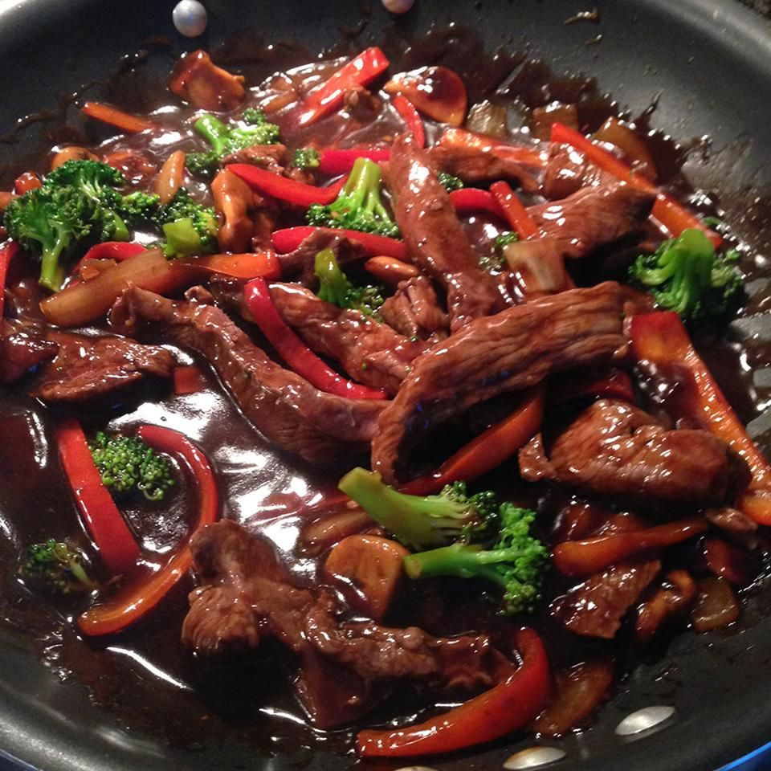

Japanese Beef Stir Fry
Back to Home
Japanese Beef Stir Fry

This Japanese beef stir-fry has tender beef strips and tender-crisp vegetables in a savory sauce, ready to pile over white rice.
| Prep Time |
30 minutes |
| Cook time |
15 mins |
| Total Time |
45 mins |
| Servings |
8 |
Japanese Beef Stir Fry
- 2 pounds boneless beef sirloin or beef top round steaks (3/4" thick)
- 3 tablespoons cornstarch.
- 1 (10.5 ounce) can Campbell's Condensed Beef Broth
- ½ cup soy sauce
- 2 tablespoons sugar
- 2 tablespoons vegetable oil.
- 4 cups sliced shiitake mushrooms.
- 1 head Chinese cabbage (bok choy), thinly sliced
- 2 medium red peppers, cut into 2"-long strips
3 stalks celery, sliced
- 2 medium green onions, cut into 2" pieces
- Hot cooked regular long-grain white rice
Directions
- Slice beef into very thin strips.
- Mix cornstarch, broth, soy and sugar until smooth. Set aside.
- Heat 1 tablespoon oil in saucepot or wok over high heat. Add beef in 2 batches and stir-fry until browned. Set beef aside.
- Add 1 tablespoon oil. Add the mushrooms, cabbage, peppers, celery and green onions in 2 batches and stir-fry over medium heat until tender-crisp. Set vegetables aside.
- Stir cornstarch mixture and add. Cook until mixture boils and thickens, stirring constantly. Return beef and vegetables to saucepot and heat through. Serve over rice.
- Serve and Enjoy!